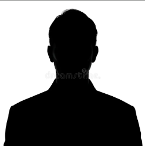

☰

Grande passionnée de cinéma, on ne la présente plus : capable de citer n’importe quel film ou acteur à partir d’une description douteuse, elle reste imbattable sur le grand écran (et parfois même sur le petit). Entre deux séances, elle trouve encore le temps de passer ses partiels de signal — un modèle d’équilibre entre études et pop-corn.
Toujours là pour rappeler à Coline d’imprimer cet affreux planning qu’elle adore secrètement, elle partage avec Max un score parfait de compatibilité. C’est aussi l’une des deux (avec Coline, évidemment) qui menace régulièrement Romane pour qu’elle regarde enfin L’Âge de Glace. On devine ses préférences.
Véritable boule d’énergie, rien ne semble jamais l’arrêter. Toujours partante pour filer un coup de main — ou suivre les pires idées de ses colocs — elle dit oui à tout : ramener des panneaux ? Oui. Garder une baignoire dans la douche ? Oui. Goûter alors qu’elle n’aime pas l’alcool ? Oui aussi. Elle fait souvent partie des derniers à rentrer de soirée, ce qui tombe bien : cette année, c’est elle la voiture-balai officielle de la Mine.
Côté innovations domestiques, elle lance les tendances : les lunettes de piscine pour couper les oignons, ou encore le grille-pain et l’airfryer installés fièrement… dans le salon. Fan assumée de la chanson Sortir du cadre depuis la Bumine, elle décore volontiers la coloc de poules et de chèvres (en version déco, rassurez-vous).
Elle a aussi une sœur jumelle de deux ans de moins — qui, selon elle, lui ressemble plus qu’elle-même. Respo-Com du BDA et véritable cheffe d’orchestre du planning, elle gère tout d’une main de maître, et c’est bien sûr la préférée du bureau.
Tryhardeuse sur Duolingo, elle a troqué l’italien pour l’espagnol dès qu’elle a su qu’elle aurait des cours niveau B2… alors qu’elle sait à peine se présenter. Elle rêve de devenir la bad girl à la guitare sur la plage — en pratique, elle maîtrise trois accords, mais c’est déjà un début. En revanche, elle est bien meilleure à la flûte (même avec des bières… qu’elle n’a pas bues).
Nulle à Mario Kart, elle persiste à vouloir battre Max, tout en finissant inlassablement dernière. Mais c’est ça aussi, sa marque de fabrique : déterminée, drôle, imprévisible, et toujours partante pour toutes les aventures de la Mine.